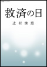
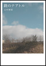
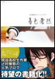

个人简介
姓名：辻村煉慈
性別：男性
生日：1990年8月18日
血液型：A型
四季文学奖最年轻获奖者！
备受瞩目的现役高中生作家
记录日常发生的事。
（编辑部注）
博客类别：日记
发送信息
订阅博客
2017年2月14日
过去的新闻
主题：博客
收到一封没有署名的转发。
是一则来自“北斗周刊”的页面。只不过新闻是十年前的……页面设计粗糙，新闻也写得看起来只是在博眼球。那时候这么流行标题党吗……
网页链接
内容看起来像是为了填版面。
突然，我被其中一条新闻吸引了注意力。
不知为何，我开始重复这个动作：把页面关掉，又重新点开。
每一次，我的脑袋都会越来越重，就像被扔进了沼泽里。周围什么都看不清，只有一片黏稠而混沌的黑暗。
这不是我第一次看到这类报道。若是平时，我一定只会随手关掉。
奇怪的是，我想不起为什么会对这篇新闻这么在意。
记忆里有一片空白，就像某个节点被挖掉了一块。
也许只是最近工作太累了吧。
编辑又在催新的稿子了。我决定先忙手头的事情。
是一则来自“北斗周刊”的页面。只不过新闻是十年前的……页面设计粗糙，新闻也写得看起来只是在博眼球。那时候这么流行标题党吗……
网页链接
内容看起来像是为了填版面。
突然，我被其中一条新闻吸引了注意力。
不知为何，我开始重复这个动作：把页面关掉，又重新点开。
每一次，我的脑袋都会越来越重，就像被扔进了沼泽里。周围什么都看不清，只有一片黏稠而混沌的黑暗。
这不是我第一次看到这类报道。若是平时，我一定只会随手关掉。
奇怪的是，我想不起为什么会对这篇新闻这么在意。
记忆里有一片空白，就像某个节点被挖掉了一块。
也许只是最近工作太累了吧。
编辑又在催新的稿子了。我决定先忙手头的事情。
文章网址 评论（314）
著作

《救赎之日》
笔触愈发老练期待已久的原创长篇小说。
预定于20XX年2月26日发售！！

『跣足剧场』
收录了六篇短篇小说在《小说四季》杂志上广受好评
是一部文笔优美、刻画细腻的短篇集。

《暮色苍然》
当红现役高中生作家辻村炼慈的人气博客现已众望所归，出版成书！
新增独家专访与写真
是粉丝不容错过的珍藏之作！

暮霭
以最年轻获奖者身份夺得四季文学奖而成为话题强烈的出道作。
50万册突破的畅销书！